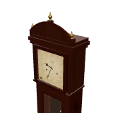

Noite de véspera no museu.
Mosaico Loop
Cinco minutos. A mesma noite. O museu recomeça. Você não.
Nesta atividade você vive o papel de quem lembra das voltas. O museu esquece. Você e o seu caderno, não.
Ande pelas salas, guarde pistas no caderno e conserte a máquina antes que a quinta volta acabe.
MUSEU · INVESTIGAÇÃO
Escolha onde investigar
Cada sala mostra um pedaço da mesma noite.
Última volta. Agora o conserto vale. Abra a Máquina e veja o que falta.
MAPA DO MUSEU
Escolha uma sala
Escolha por onde começar.
O TEMPO RETORNOU
Você se lembra.
As portas fecharam de novo. Tudo voltou para o lugar. Mas você lembra do que achou.

ÚLTIMA DECISÃO
Reconstrua a noite.
Veja até onde a sua investigação chegou.
Ver o arquivo
O arquivo tem registros pela metade. Compare os trechos e deixe em aberto o que você ainda não sabe.
REVELAÇÃO
A noite, reconstruída.
Outra partida pode trazer outro defeito na máquina.